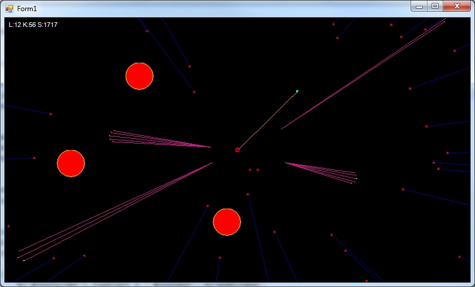
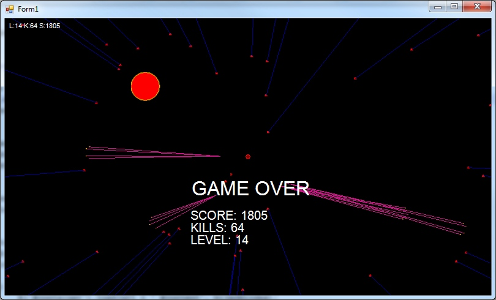

Missile Commander
[Source]
First game to learn game programming.
Classic missile game where you have to protect your planet from enemy missiles.
Developed with C#, using extremely simple architecture. (loosely based on this)
Two types of missiles and helper moonbase.

Game
Game ends when missile hits planet.
Scores are calculated based on own kills, moonbase kills and levelmultiplier.

Scores